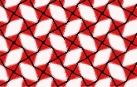

Cristalizar  Una precisión con respecto al fijar. Fijar en la coherencia del cristal que siendo una estructura rígida y estable es transparente y deja ver a través. Es en la justeza de la obra que se inscribe en el mundo, en el concierto de lo público y para esto debe ajustarse a lo convencional de la lectura y a lo que la materia indica como relación del número (tiraje) y todo lo que implican las economías de la reproducción o de la transmisión en el caso de las obras digitales. El cristal es un modo de la tesela, figura que a partir de sí misma, es capaz de cubrir el plano euclídeo sin huecos ni solapamientos. Se trata de lo contable del infinito. Cristalizar es contarle al infinito. |